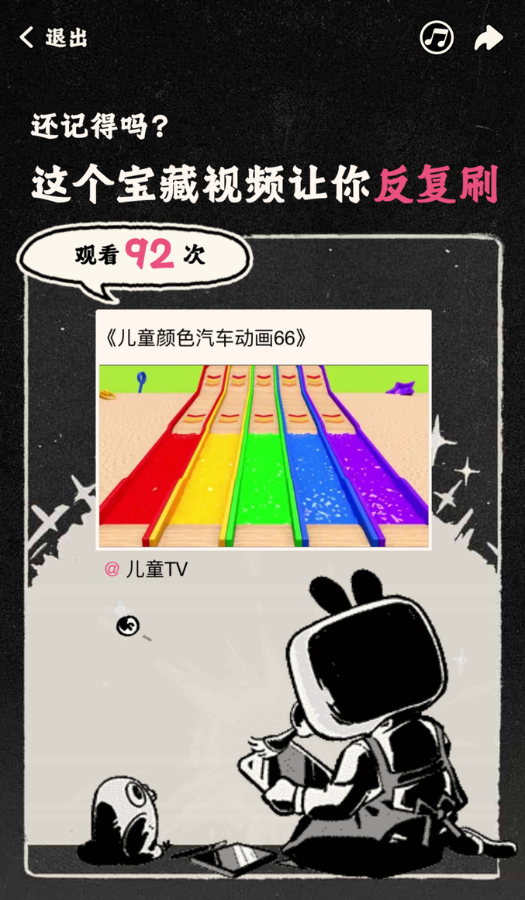

2023 年度总结
2023 年将要结束，各大 app 变着花样地给用户生成年终总结。有一些报告中的统计数据还能让我会心一笑，比如 B 站的这个：

现在娃在午睡，我难得空出了两小时，不如也来总结一下自己的 2023 吧。
裁员
四月份，我被字节跳动裁员。对此事件本身，我倒也没有多少可评价的。我并不以字节为荣，字节也不会以我为荣。但令人齿冷的是个别所谓领导在此事前后的嘴脸。长这么大，我第一次对一个人产生了刻骨的仇恨。有多仇恨？这么说吧，如果我面前有一个红色的按钮，按下它会让此人的脑袋原地爆炸，我会毫不犹豫地按下按钮！我出一万块按！
但只出一万，不能再多了。原因见下文。
四十
六月份，我四十了。生日那天，我在电脑前呆坐了一个钟头，试图写下些深刻的文字，不过结果大家也看到了——什么也看不到。我并不因此认为自己江郎才尽，我只想说，这是「文章憎命达」的体现。那边有观众说：「你不是刚被裁员吗？命达什么？」我只能回答：「叉出去！」
或曰：「四十不惑，你还惑吗？」我不想回答这个问题，我觉得这只是文字游戏。有没有惑，取决于对「惑」的定义。疑惑？当然有。迷惑？从未有过。
或曰：「四十了，觉得自己老了吗？」答：「没有。」我从未觉得自己在变老，我只觉得世界在变得年轻，变得陌生……
买房
九月份，上海出台「认房不认贷」新政。老婆掐指一算，在新政的加持下，我们踮踮脚，咬咬牙，也可以置换一套徐汇的学区房了。我对房地产和政策一无所知，但我大受震撼，果断拍板，换！
我们两口子跟着中介跑了几个周末，终于选下一套心仪的房子。中介效率极高，立刻约来卖家面谈。
「但我们自己的房子还没卖啊？」 「可以先买后卖。」
就这样，借着「认房不认贷」的东风，本着「先买后卖」的方针，我们一只脚踏入了市中心。买好了房子，心潮澎湃，在家感慨，我们可真是傻人有傻福啊！
傻人确实，傻福未必。
马修·派瑞去世
今年有不少我认识的明星去世，李玟，周海媚，但最让我意难平的，是 Friends 中 Chandler 的扮演者马修·派瑞的去世。
我是铁杆「F.R.I.E.N.D.S.」粉，但我接触 Friends 其实很晚，似乎是 2006 年才第一次看。当时我在好友 FF 家作客，百无聊赖，他随手打开他电脑上的某一集 Friends 来看。剧中，Phoebe 表示不相信万有引力，把科学家 Ross 气个够呛。这时有人敲门，Chandler 说：
Uh oh, it’s Isaac Newton and he’s pissed!
不算逗，但这份幽默可太戳我了。我当即要求从第一集开始放。第一集，Ross 离婚了，因为他的妻子是 lesbian。Chandler 在旁边自言自语：
Sometimes I wish I was a lesbian… Did I just say that out loud?
我咬着嘴唇，憋笑至面容扭曲。
后来，我把 Friends 看了不下十遍。Chandler 无疑是剧中我最喜欢的角色。有时，我从他身上看到自己的影子：“sarcasm”，“lame with women”。看到 Chandler 在第六七八季有时瘦到脱相，有时又胖到令人脱粉，还会让我回忆起自己那一段不堪回首的沉沦岁月。Chandler 已逐渐成了我自己人生的某种投影，而他的扮演者马修·派瑞则是这个投影的具象寄托。
现在，马修·派瑞离世了。当我再看到 Friends 的片段，再看到 Chandler 谈笑风生，总感觉画面似乎被蒙上了一层黑白滤镜，让我无法真正开怀。
爷青结。
卖房
书接上回。我们买了房子，如同南美的蝴蝶扇了一下翅膀，从此房价便一泄千里，覆水难收，每况愈下，至死方休。
我们买房时，那是不折不扣的天使买家。还价还得如此之少，少到中介都看不下去，主动帮我们又砍下去一截去和卖家谈。谈到了心理价位，我们便主动说不必再砍了，还是在中介的坚持下，又砍掉了五万。为此我还觉得过意不去。
现在轮到我们当卖家了，才发现原来服务器里都是会玩的大佬。天使买家？不存在的，清一色的恶魔。说恶魔也不客观，毕竟多数买家也并不是凶神恶煞。我换一个更贴切的形容：秃鹫。
秃鹫买家，不靠近，不离开，不沟通，不动声色，只是静静地等着，等着我们降价，等着我们的血再多流一些，鼻息再微弱一些，等到我们熬不过冬天，彻底凉透，然后他们再来享用。
娃醒了，不多聊了。强行呼应一下开头，不是提到一万块按那个按钮，不能再加了吗？去他妈的吧，十万我也按！一百万也按！